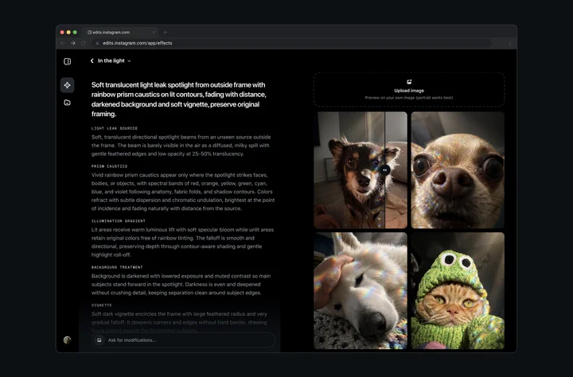

科技產品 T1
Anthropic 發布 Claude Fable 5.2 與 Mythos 5.2，公開模型與受驗證存取仍採不同防護安排
發佈時間
Anthropic／Claude Fable 5.2、Claude Mythos 5.2
Anthropic更新兩款面向複雜技術任務的模型，Fable提供一般產品管道，Mythos則維持驗證計畫的存取門檻。
- 官方稱兩者使用同一基礎模型，但Fable具有較強的資安及生物領域防濫用限制。
- 開發者可使用claude-fable-5-2，官方列AWS、Google Cloud及Azure等供應管道。
- 資安及生命科學機構可申請Mythos驗證存取；Mythos fast mode亦限符合驗證計畫的組織。
完整報告收合報告
事件背景與影響
模型版本、風險防護與取得資格須一起理解，不能把同一基礎模型視為兩種可無條件互換的產品。
事件與發佈依據
官方11/9具名公告新版本，當日19:00UTC媒體報導佐證截點前已發布；不把舊5.1或既有Claude功能重刊。
收錄紀錄
10/27至11/9十四份日報窄查Fable／Mythos5.2無命中，同窗31列產品表亦未收，採獨立模型版本發布。
尚待確認
程式、科學與安全評測是公司公布的結果，不是本報獨立實測或無風險保證。可用平台不代表每個方案、席次及地區同時具有相同額度；未把申請資格寫成一般用戶自動可用。
相關實體與概念
Anthropic、Claude Fable 5.2、Claude Mythos 5.2、驗證計畫、模型防護、技術代理。
科技產品 T2

Instagram Edits官方Effect Builder示範介面；不是本報帳號操作或台灣可用性實測。 Instagram／Meta／Edits
Instagram 推出 Effect Builder，美國成年使用者可用文字建立限時動態效果並送審公開
發佈時間
Meta／Instagram Effect Builder
Effect Builder讓使用者在網頁描述想要的視覺效果、以照片預覽及修改，通過審核後供Instagram Stories使用。
- 官方寫明免費建立與發布，初期限美國over 18使用者，不是全球同步開放。
- 可以自己的照片測試效果，再修改提示詞；不需要編寫程式。
- 每個效果先經安全審核，核准後才進入效果瀏覽器，使用時會連回創作者帳號。
完整報告收合報告
事件背景與影響
效果創作從專門設計工具轉向自然語言，但公開發表仍有地區、年齡及內容審核限制。
事件與發佈依據
Edits官方11/9公告新工具，The Verge原始metadata為11/9 18:07:23UTC；官方僅日期，不自行補精確時刻。
收錄紀錄
十四份日報查Effect Builder與AI濾鏡無命中，同窗31列產品表亦無；與已收Muse Spaces為不同工具及變更。
尚待確認
不把送審寫成立即公開，也不保證任何提示都會成功；官方示範圖不是本報操作實測，未確認台灣可用或審核所需時間。
相關實體與概念
Instagram、Edits、Effect Builder、Stories、提示詞、內容審核、創作者署名。
全球焦點 1
續報｜川普會見卡達總理後稱對伊朗軍事行動暫無必要，但美方海上封鎖仍持續
發佈時間
川普表示伊朗戰爭在軍事上已大致結束、目前不認為需恢復大規模打擊，但仍維持封鎖與行動準備。
- 卡達總理Mohammed bin Abdulrahman Al Thani於當日與川普會面。
- 川普仍保留情況改變時採取軍事行動的選項。
- 截點前未宣布正式核協議、解除封鎖或撤軍。
完整報告收合報告
事件背景與影響
總統對動武的表態與實際軍事部署未完全同步，不能只取其中一句便宣告和平已成。
事件與發佈依據
AP11/9 21:52:41UTC報導當日白宮會後談話，非前日電話訪問重刊。
收錄紀錄
11/7已收卡達元首與川普通話；今日新增卡達總理實際赴白宮會面及川普會後公開立場。
尚待確認
這是美方立場而非各方共同確認的終戰結果；間接談判進展不能等同所有核議題與制裁條件已談妥。
相關實體與概念
Donald Trump、卡達、伊朗、白宮、調停、海上封鎖。
全球焦點 2
續報｜COP31 在土耳其正式開幕，各國開始協商氣候承諾落實與融資安排
發佈時間
COP31在Antalya啟動，落實既有減排承諾、能源轉型與協助發展中國家的資金成為談判焦點。
- 官方會期為11/9至11/20；土耳其為主辦國，澳洲主導談判工作。
- 氣候主管Simon Stiell呼籲加快實際解決方案；融資與執行仍有分歧。
- 談判尚未結束，不能預先宣告最終協議內容。
完整報告收合報告
事件背景與影響
開幕使議題進入正式談判程序，但發言與行動議程不是各國已一致通過的新義務。
事件與發佈依據
UNFCCC當日日程記錄正式開幕，AP事後報導實際演說；不把早期預告文章時間當儀式發生時刻。
收錄紀錄
11/4已收塔利班觀察員出席安排；今日新增COP31會議實際開幕與協商，不重刊邀請消息。
尚待確認
官方開幕稿頁面顯示11/8，但實際日程及事後報導指向11/9；本文採事件日，不以頁面日期提前宣布開幕。
相關實體與概念
UNFCCC、COP31、Antalya、Simon Stiell、氣候融資、能源轉型。
全球焦點 3
美國眾議員 Massie 正式推進國防部長 Hegseth 彈劾決議，提出指控不等於表決通過
發佈時間
共和黨眾議員Thomas Massie宣布推動對Pete Hegseth的彈劾表決，指控涉及伊朗戰爭及其他濫權行為。
- Massie官網說此次行動涉及八項彈劾指控。
- 他主張未經國會授權的伊朗作戰違反戰爭權力相關規範，此為提案方主張。
- 截點前沒有眾院已通過或Hegseth已被免職的確認。
完整報告收合報告
事件背景與影響
個別議員啟動程序與眾院通過、參院定罪免職是不同階段，政治壓力不能替代法律結果。
事件與發佈依據
AP11/9 17:33:22UTC報導正式提出；議員官網同日公布程序與八項指控，非十月預告。
收錄紀錄
十四份日報未收本次正式程序，其他選後人事或調查預期不是此決議。
尚待確認
指控尚待國會處理，不是法院已認定違法；不將議員聲稱可迫使表決當成一定獲多數支持。
相關實體與概念
Thomas Massie、Pete Hegseth、美國眾議院、彈劾、戰爭權力。
全球焦點 4
土耳其鋼鐵廠爆炸至少十六死，初步調查指吊車墜入電弧爐，完整責任仍待釐清
發佈時間
İzmir省Aliağa一座鋼鐵廠發生爆炸，當局逐步上修傷亡，總統於內閣會後稱16人死亡。
- 省政府稱爆炸約在當地中午、09:00UTC發生。
- 初步說法是高架吊車斷落進入液態鋼鑄造中的電弧爐。
- AP後續列16死13傷；早版三死與失蹤人數不再當最終數字。
完整報告收合報告
事件背景與影響
高溫製程事故的傷亡、搜救與技術責任須分開確認，初步原因不代表調查已結案。
事件與發佈依據
AP11/9 11:48:57UTC首篇報當日爆炸；Reuters當日後續更新總統確認16死。
收錄紀錄
十四份日報未收本次Aliağa Habaş工廠爆炸，採新工安事件。
尚待確認
部分其他報導出現17死，本文採已核Reuters總統聲明與AP至少16死，不把不同時間的失蹤者再加到死者。機械故障與管理責任仍待調查。
相關實體與概念
Türkiye、İzmir、Aliağa、Habaş、電弧爐、職業安全、事故調查。
全球焦點 5
G7 外長在巴黎展開會談，對伊朗、烏克蘭及國際刑事法院的立場仍有分歧
發佈時間
七國外長開始巴黎會議，Rubio表示美國外交方向不因共和黨期中選舉挫敗而自動改變，各國仍需協調多項爭議。
- 議程涉及俄烏戰爭、伊朗與國際刑事法院等問題。
- Rubio強調總統在外交決策的角色，同時承認國會資金與監督職權。
- 此為兩天會議啟動，截點不能預判最終共同聲明。
完整報告收合報告
事件背景與影響
實際外交會談展示盟友差異，不能把共同出席等同已取得一致政策。
事件與發佈依據
AP記錄11/9實際外長會談與會後記者問答；早版05:01:59UTC不當成整日所有發言的發生時刻。
收錄紀錄
十四份日報未收本次巴黎G7外長會，與既有G20或個別國家聲明不同。
尚待確認
美方政治表態不等於其他成員認同，亦不是國會職權已取消；本報不將開會日誤當最終協議發布日。
相關實體與概念
G7、Paris、Marco Rubio、國際刑事法院、外交協調、國會監督。
全球焦點 6
續報｜克拉科槍擊嫌犯傷重死亡，波蘭當局仍將追查是否有人協助或煽動
發佈時間
嫌犯Michał Oksiński於週一凌晨在醫院死亡，調查人員仍試圖釐清動機及是否有其他參與者。
- 當局稱嫌犯於當地04:30死亡，先前受傷並接受多次手術。
- Reuters與AP最新稿稱24歲；早期稿25歲有差異，本文不沿用舊年齡。
- 六名廣場死者、十五傷者與住處另三名家人遺體仍分開記錄。
完整報告收合報告
事件背景與影響
死亡改變後續刑事程序，但不會自動解答事件責任、協助者或極端思想來源。
事件與發佈依據
AP11/9 06:33:02UTC報導當日凌晨死亡確認；Reuters後續核對持續調查。
收錄紀錄
11/8已收廣場攻擊及嫌犯遭捕；今日新增嫌犯死亡，司法調查仍持續，不重刊舊傷亡補位。
尚待確認
極右思想歸因仍有爭論，不能因嫌犯死亡便宣稱動機已完全查明；其他可能涉案者尚待證據。
相關實體與概念
Poland、Kraków、Michał Oksiński、檢察機關、刑事調查。
全球焦點 7
奈及利亞警方首次通報 Zamfara 村莊襲擊十一死、十三人遭擄，事件原因仍待調查
發佈時間
警方稱武裝分子殺害一名地方安全志工與十名親屬，另擄走十三人並焚燒住宅。
- 地點為Maradun地區Gidan Taba村。
- 死者總數十一包含志工本人，不是十一名親屬之外再加一人。
- 警方指他曾協助安全部隊抵擋武裝團體，認為可能因此被鎖定。
完整報告收合報告
事件背景與影響
地方防衛者及家屬遇襲顯示社區保護壓力，但警方提出的報復動機仍須調查證據支持。
事件與發佈依據
Reuters經Devdiscourse11/9 16:07IST＝10:37UTC報導警方當日披露週末攻擊；不把襲擊日改成週一。
收錄紀錄
10/28曾收Taraba州Binnari另案，本次Gidan Taba、Zamfara不同地點與事件，採首次披露。
尚待確認
被擄者下落與完整行凶者身分未公布，不能將所有西北部暴力自動歸為同一組織。
相關實體與概念
Nigeria、Zamfara、Maradun、Gidan Taba、地方志工、綁架。
全球焦點 8
中國十月 CPI 年增百分之零點七、PPI 年增百分之五點七，消費與生產價格走勢分化
發佈時間
中國CPI年增0.7%、月比持平；PPI年增5.7%、月增0.7%，兩種指數反映不同價格層次。
- 核心CPI扣除食品與能源後年增0.8%。
- 食品價格年減2.9%，非食品年增1.5%。
- 生產者出廠價格與購進價格不同，購進價格年增7.9%，不能互換。
完整報告收合報告
事件背景與影響
工廠價格上漲不代表所有家庭消費同幅變貴，解讀需分辨能源、食品與各項權重。
事件與發佈依據
國家統計局11/9 09:30發布十月數據；統計月份不是發布日期。
收錄紀錄
十四份日報未收此次十月CPI／PPI公告，其他PMI或經濟展望不是同一統計事件。
尚待確認
同比與環比不可混用；2026年CPI改採2025基期，權重調整亦須留意。本次數據不是央行已宣布新政策或投資建議。
相關實體與概念
中國國家統計局、CPI、PPI、核心物價、食品價格、生產成本。
全球焦點 9
IMF 啟動烏克蘭貸款計畫合併審查，通過後可望釋出約十六點七億美元
發佈時間
IMF開始與烏克蘭討論貸款計畫的第二、第三次評估，結果可能讓基輔取得約16.7億美元新資金。
- 討論包括總體經濟、財政政策及結構改革。
- 烏方表示2027年預算與外援需求亦在討論範圍。
- 會議安排涵蓋Lviv與Warsaw，部分專家線上參與。
完整報告收合報告
事件背景與影響
啟動審查提供財政協調管道，但資金仍取決於評估與核准，不能提前列為已入帳。
事件與發佈依據
Reuters11/9 12:27:36UTC首次報導當日啟動審查，不是貸款已撥付。
收錄紀錄
十四份日報無本次第二與第三次合併審查啟動，與其他軍援、戰況或外交會談不同程序。
尚待確認
不同來源對明年資金缺口的口徑不一，本文不混用。尚無本次審查已通過或董事會已批准撥款的確認。
相關實體與概念
IMF、Ukraine、EFF、財政預算、貸款審查、國際融資。
全球焦點 10
續報｜美股十一月九日收盤反彈，標普升百分之二點三、Nasdaq 升百分之二點七
發佈時間
美國主要股指在油價下跌之際反彈，但市場整體上漲不代表每家科技公司同步回升。
- S&P 500收7,549.94點，上升173.08點，約2.3%。
- 道瓊收52,389.75點，升1,104.02點，約2.2%。
- Nasdaq收25,253.14點，升673.71點，約2.7%。
完整報告收合報告
事件背景與影響
單日反彈與長期走勢不同，盤中、收盤及四捨五入百分比需使用同一時間基準。
事件與發佈依據
AP11/9 21:22:58UTC公布當日收盤，與盤中預測及上週收盤分開。
收錄紀錄
11/6已收Nasdaq急跌；今日新增11/9交易日三大指數實際收盤反彈，不以評論占名額。
尚待確認
部分盤中快報寫標普約2.4%，本文採AP收盤值；市場敘事不證明單一因果，也不是買賣建議。
相關實體與概念
S&P 500、Dow Jones、Nasdaq、收盤行情、波動、油價。
研究備註
時間、來源與後續追蹤
研究截點 2026-11-10 07:59:21（Asia/Taipei）
研究時間與範圍
研究截點：2026-11-10 07:59:21（Asia/Taipei）。全球新聞：2026-11-09 07:59:21 至 2026-11-10 07:59:21（Asia/Taipei）。科技產品：2026-10-27 07:59:21 至 2026-11-10 07:59:21（Asia/Taipei）。